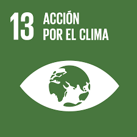

Quiénes somos
Somos una organización dedicada a la prevención de incendios forestales.

Nombre 1

Nombre 2

El cambio climático y los incendios forestales están íntimamente relacionados. Los incendios no solo destruyen grandes áreas de vegetación, sino que también liberan grandes cantidades de CO2 a la atmósfera, acelerando el calentamiento global. El ODS 13 busca tomar medidas urgentes para combatir el cambio climático y sus efectos.
El prototipo que desarrollamos es un sistema avanzado de sensores diseñado para detectar incendios en diversas áreas, como bosques, edificios y zonas rurales. Estos sensores monitorean continuamente el entorno en busca de señales de incendio, como cambios de temperatura, presencia de humo o gases característicos. Cuando se detecta alguna de estas señales, el sistema activa un mecanismo que envía alertas en tiempo real a la población cercana. Las notificaciones pueden llegar a través de aplicaciones móviles, mensajes de texto o sistemas de comunicación pública, garantizando una respuesta rápida y efectiva ante posibles incendios.
Somos una organización dedicada a la prevención de incendios forestales.
Donaciones para combatir incendios.